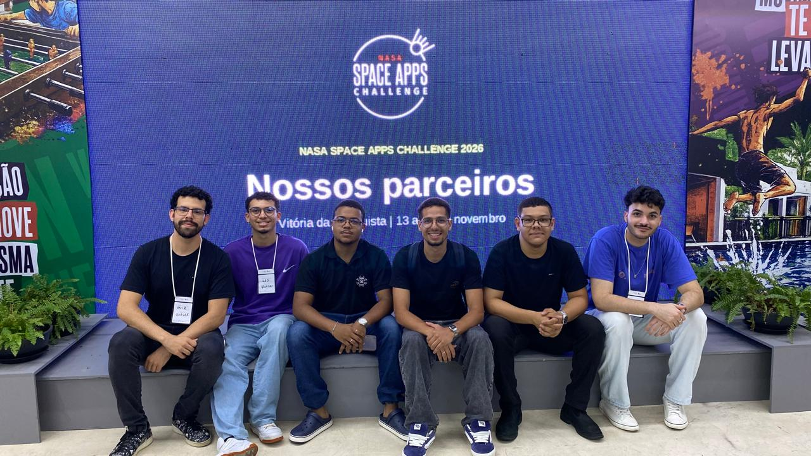

NASA Space Apps Challenge • Quas6r Team
Applied Neuroscience as the Key to Longevity and Performance.
ISIS Project: Health Indicators Software Integration — Cognitive prosthesis and external executive support for deep space missions.
The brain under siege in deep space.
In long-duration space missions (such as Mars or the Lunar Gateway), the human body is not the only system subjected to severe stressors; the brain is the first line of wear and tear.
NASA's Human Research Roadmap demonstrates that astronauts face a perfect storm of adverse neurobehavioral factors: sleep deprivation, isolation, and decision fatigue.
An average of only 6 hours per night, with 19% of rest periods circadian-misaligned, generating attention deficits equivalent to a sleepless night.
Isolation & Overload
Years away from Earth without real-time support and severe exhaustion of the prefrontal cortex (executive paralysis).
The Cognitive Prosthesis to Enable Long-Duration Missions.
External Executive Support
Traditional software fails by ignoring the neurobiology of stress. ISIS handles the heavy lifting of planning, remembering, filtering, and switching contexts, preserving mental energy strictly for survival.
Reduction of Mental Friction
The crew doesn't waste energy deciding what to do or filling out forms; the system delivers the next step cleanly, empathetically, and free of anxiety.
Shielding Against Collapse
Prevents early neurobehavioral decline and avoids long-term dementia and post-traumatic stress, enabling missions lasting years without operational collapse.
Brain-Based Interface Engineering.
Cognitive Load Filter
The Principle: A stressed brain overloads working memory with multiple stimuli.
The Solution: Hides background noise and displays only one main action per screen, broken down into sequential micro-steps to offload the prefrontal cortex.
Immediate Dopamine & Streaks
The Principle: Punitive gamification activates the threat system in the amygdala (fear and symptom concealment).
The Solution: Reporting "I feel bad" yields the same score as "I feel good". Flexible streaks: if a day is missed, progress never resets, activating sustainable dopamine.
Transition Buffers
The Principle: Abrupt context switches break hyperfocus and raise frustration in confined spaces.
The Solution: Contextual reminders and planned transitions during natural breaks in the routine, respecting the neurobiological rhythm.
Measurable results in orbit.
Biologically Honest Approach (Anti-Punishment)
Unlike the market, which focuses on punitive numerical goals, ISIS gamifies awareness and truthful reporting ("taking care of oneself and reporting the truth").
Local Autonomy & Immediate Response
Developed to operate 100% offline, ensuring neuroscience support occurs instantly, without Earth's 20-minute delay.
Integrated Environmental Computer Vision
Passive, imperceptible tracking of fatigue and posture via spacecraft cameras, eliminating manual data entry friction for the exhausted user.
Estimated reduction in operational freezes under high pressure.
Engagement rates in multi-month missions with flexible streaks.
Active mitigation of NASA BMed-103/108 gap risks (sleep deprivation and mental fatigue). Scalability for terrestrial applications (spin-offs for ADHD and extreme environments).
Space Engineering & Neuroscience.
Developed by experts in human factors, computational neurobiology, and autonomous systems to ensure crew cognitive resilience in deep exploration environments.

Development Team